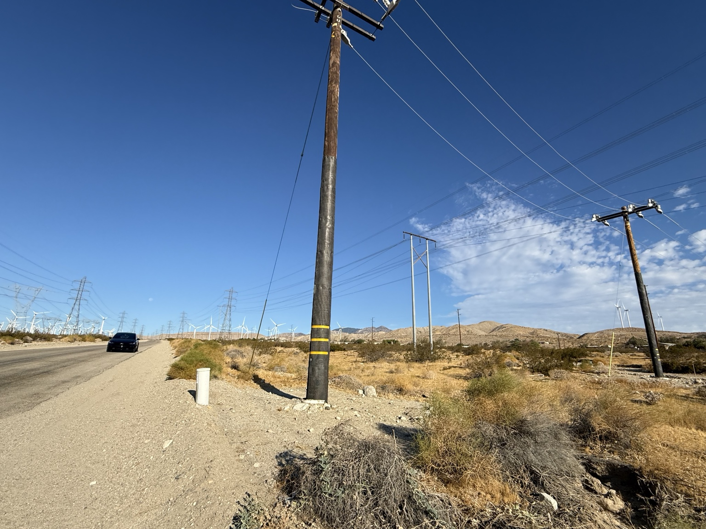
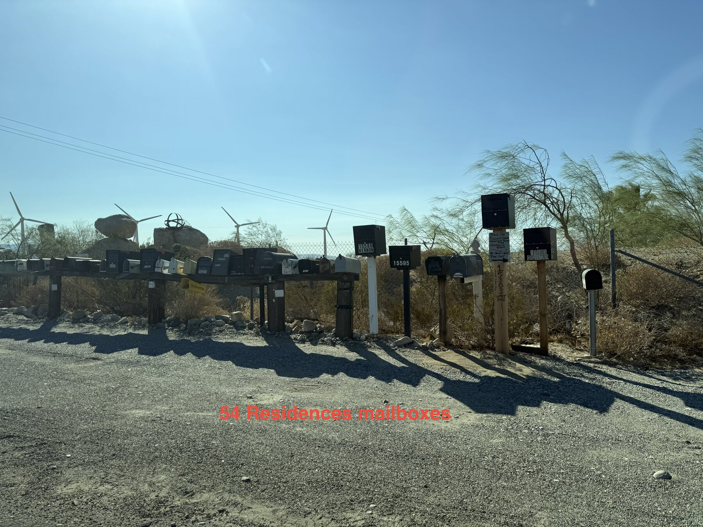
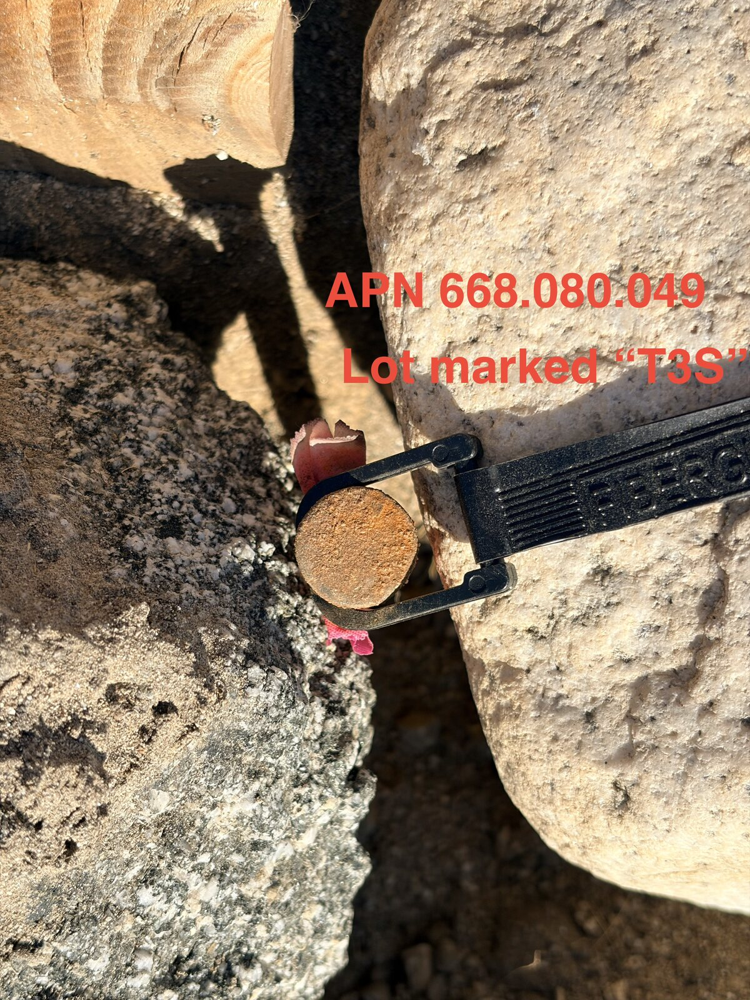

Actual Site PhotoAugust 26, 2026 · Whitewater, CA
Vernon Rd Utility InfrastructureElectrical poles, overhead lines and roadside infrastructure documented near the property.
Actual photographs and videos from the Whitewater property and surrounding area, kept separate from conceptual renderings so visitors can clearly distinguish existing site conditions from future development ideas.
Each dated image below is presented as field documentation. Captions are descriptive only and do not establish legal boundaries, utility availability, permitting, or development approval.









Video provides additional context for road frontage, terrain, infrastructure and the relationship between the property and its immediate surroundings.
Field clip documenting utility poles, overhead lines and roadside infrastructure adjacent to the site.
Recorded view along the paved 16th Ave side of the property.
General walkthrough footage showing current site conditions and surrounding landscape.
Site photos, field markers, road frontage, neighborhood context and infrastructure observations.
Boundary confirmation, utility-provider information and development-standard research.
Concepts, site placement, permitting documentation and preparation milestones.
Progress photos, videos and a final record of how the property evolves.